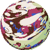
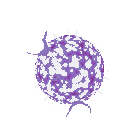

Satellites Arts Project
From 1975 to 1977, Kit Galloway and Sherrie Rabinowitz created this project under a heading called “Aesthetic Research in Telecommunications”. The Satellite Arts Project was formed under the inspiration to create decentralized information and broadcasting communication, the Satellite Arts Project was referred to as a “A Space with no Geographical Boundaries”. The project brought together performance artists from across the world to perform together at the same time. Artists would communicate with each other, create choreographies that played off the limitations of the medium, such as creating a “split screen effect” where one performer’s body would cut off and the other performer across the screen would mimic the ending or beginning of the body to form one cohesive collage that would make up the performance. The Satellite Arts Project proved to be a foundation concept in decentralized expression of art in a digital age, and also made up one of the first recorded digital performances recorded.
Marisol:I was amazed by the interesting visuals that were created during this project, especially the last one in the video where a person is dancing with their own delayed images. I was amazed to learn about the different processes and ideas that Kit Galloway and Sherrie Rabinowitz had and how they decided to use satellite images to experiment with time delay, as well as connecting two separate words into one through the use of a split-screen in order to create a new form of interactions.
Milo: The visuals for this project are breathtaking! This project stands up to the test of time and continues to break down the barriers between a digital world and the physical world. I found it especially impressive how Kit Galloway and Sherrie Rabinowitz were able to create this project considering the relatively unimportant amount of resources they had.
Hole in Space
Hole In Space was a public communication sculpture that allowed strangers on the street in New York to communicate with others in Los Angeles. They could see life-sized television images of people on the screen, reacting at the same time as them located on opposite coasts. Considering the era, Hole in Space makes up the first online video-chat to have been recorded and documented. The public sculpture appeared with no announcement, no explanation, and no attempt to credit anyone, it simply stayed present for three nights, and through word of mouth, strangers would interact, eventually families, and friends who were separated by a continental distance.
I think it amazing to see the early developments of video-chat communication since it is a very important technology that is now used by multiple people to connect with friends and family, and have academic/professional meetings. Another aspect that I really enjoyed was learning that through this work people had the opportunity to interact with their family, friends, and complete strangers even though they were separated by great distances.
This sculpture feels so powerful and important in the sense that at its core it attempts to bring others together. It attempts to use digital communication technology as a tool to bridge a gap, to make distance disappear and to focus on the pure human interaction.
Electronic Cafe

In 1983, artists Kit Galloway and Sherrie Rabinowitz began a concept for a decentralized telecollaborative network that would connect the public through various “Internet Cafes”. They thought that this technology would allow a new cultural image would emerge through media technologies. The project focused on integration, integrating community, art, and people across the world. The installation ran for eight weeks during the 1984 Summer Olympics Arts Festival. The ECN concept sought to bring people together and forge a new cultural identity solidified upon telecommunications technology.
Once again, it is exciting to see the early development of technologies that let us communicate with others at long distances, allowing for the discovery and connection of different cultures and languages. I was also interested in the concept of the artwork being like a cafe in the sense that there were multiple different conversations and interactions going on at the same time and someone was allowed to join in or to start their own topic of discussion.
This was such a visionary project to create during the 1980s, and it was especially interesting to me how a large focus on this project was to break language barriers, and break the intimidation of keyboards and technology that the general public possessed at the time. By putting human connection and communication at the forefront of their vision, they were able to create a network consisting of a public database, community memory terminal, audio-conferencing, tele-writers, print-outs and even still/image video that allowed installations in the network to communicate through every medium possible.